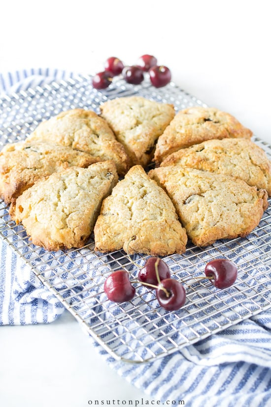

Scones

Description
This recipe is a favorite, because it's adaptable to any ingredients in your cupboard. Try out the classic cherry almond variety, or mix it up with fluffy pumpkin ginger scones!
Ingredients
- 8T butter
- 1/4c sugar
- 2c flour
- 1T baking powder
- 1/2 tsp salt
- 1 egg
- 1/2c cream/milk/yogurt
- 1/2 tsp almond extract
- 3/4c dried cherries
Steps
- Preheat oven to 350 degrees.
- Cut together butter and sugar.
- Mix in flour, baking powder, and salt.
- In a separate bowl, beat the egg with almond extract and cream/milk/yogurt of your choosing, then add to flour mixture.
- Fold in cherries.
- Bake in a round cake or pie pan for 35-45 minutes until cooked through.